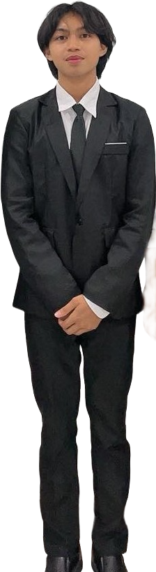

|
 Personal Information
Education ______________Elementary schoolOdiongan South Central Elementary School Secondary schoolLaboratory Science High School - Romblon State University Bachelor of Science in Information TechnologyRomblon State University Skills ______________
Language ______________
|
Erwin Bryan FormillezaAbout Me________________A motivated second-year college student with a strong interest in technology and continuous learning, eager to gain hands-on experience and enhance technical, analytical, and problem-solving skills. Experience________________
Student IT Student – Practical Learning Experience (Academic Projects)Romblon State University
Independent Learner – Web & SecurityRomblon State University
|